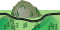
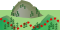
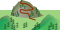

Please see that this is version 0.5 of the stylesheet. While I have a (project) roadmap I add features as requested by users. This version will present picture links, geographic information and a menu at the top. Also, I have added a windrose (which currently holds no information) to show the direction to go. And: There is a profile image that shows hints and which reflects the tour. Also, I have modified the CSS in some ways. I have fixed the windrose image and added some graphical pavement info. What do you think about the new CSS-Menu?
Wir starten am Tiergarten, fahren etwas uphill durch die Stromschneisse, dann den 'Mini-DH' runter. Von da geht's ab in den sog. 'Roller Coaster' Am Schluss fahren wird entlang der Pegnitz zurueck zum Tiergarten. Alles ganze easy (nix fuer _echte_ Downhiller!), den 'DH' kann man schieben und ausserdem sind da immer Chicken Runs im Wald... an der Felsenstelle nehm' ich den auch immer.;-) Viel Spass! --- Bitte nehmt das hier nicht ernst! Das ist nur eine Testdatei, um das System zu zeigen.
| Kondition | |
| Technisches Koennen | |
| Typ | |
| Dauer | 01:00hrs |
| Laenge | 10km |
Auf der A3 aus Richtung Wuerzburg oder Passau kommend bei Nuernberg/Moegeldorf (Nummer ?) abfahren (Richtung Zentrum). Immmer geradeaus bis man zu einem sehr grossen Platz kommt. An der Kreuzung (da steht der Tiergarten schon angeschrieben) links. Dann immer geradeaus. Diese Strasse fuehrt direkt zum Tiergarten. Parkplatz suchen und ab Richtung Eingang.
Am Nuernberg Hbf aussteigen. Dann mit der Strassenbahn (Nummer ?) direkt zum Tiergarten.
Am Flughafen NUE aussteigen... ;) Dann via U-Bahn zum Hbf. Ab dann: siehe 'Per Zug'.
Entfernung:0 Hoehe:310
Breitengrad:000 Laengengrad:000

Wenn wir vor dem Tiergarteneingang stehen und auf diesen blicken, dann fahren wir nach rechts auf der Teerstrasse. Vorher kommt ein kleiner Drop (Bild 1). Das ist ein beliebtest Piknik-Gebiet. Achtet bittet auf die Piknik-Fahrer (Bild 2)...
Streckenbelag: 
Entfernung:000 (Interessanter Punkt)
Manche Fahrer ueberschaetzen die Anforderung der Tour etwas.
Entfernung:500 Hoehe:315
Breitengrad:000 Laengengrad:000

Hier geht's nach rechts auf der geteerten Strasse in den Wald.
Streckenbelag:
Entfernung:500 (Interessanter Punkt)
Ab und zu trifft man hier auch Downhillers...
Entfernung:500 Hoehe:320
Breitengrad:000 Laengengrad:000

Hier sollte der Teerweg langsam in Schotter uebergehen.
Streckenbelag: 
Entfernung:500 (Lokal/Restaurant)
Netter Pub... mitten im Wald?!?
Entfernung:800 Hoehe:330
Breitengrad:000 Laengengrad:000
Wir kommen an eine Kreuzung und sollten uns direkt unter der Stromleitung befinden. Links geht es die Stromschneisse hoch. Wir fahren das am rechten Waldrand hoch: Da ist der Trial! "Dumm ist nur, wer Dummes tut" (Gruss an alle die links hochfahren... >;-).
Streckenbelag: 
Entfernung:gesamter Weg (Anekdote)
Wenn's gar nicht mehr geht, dann einfach ab in den Wald. Der ist nicht dicht... man kann da auch gut schieben (und wird nicht gesehen ;-).
Entfernung:gesamter Weg (Anekdote)
Mal was ohne Bild.
Entfernung:500 Hoehe:430
Breitengrad:000 Laengengrad:000
Ok, wir sind oben :-)) Jetzt am Schotterweg nach rechts. Gleich kommt der 'Roller Coaster'!
Streckenbelag:
Entfernung:200 Hoehe:600
Breitengrad:000 Laengengrad:000

Ein letzter Anstieg.
Streckenbelag:
Entfernung:200 Hoehe:310
Breitengrad:000 Laengengrad:000

Ein suedwest Punkt.
Streckenbelag:
Entfernung:300 Hoehe:600
Breitengrad:000 Laengengrad:000

Ein nordwest Punkt.
Streckenbelag:
Entfernung:200 Hoehe:310
Breitengrad:000 Laengengrad:000

Back At Home!